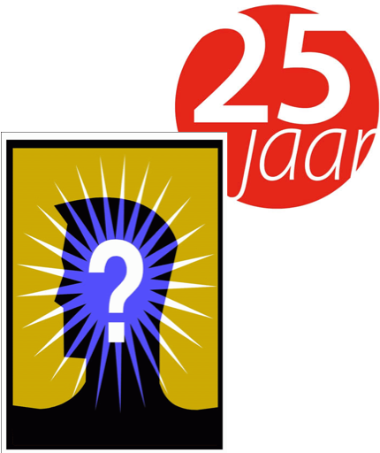

|  | Uitslag 25ste FAMILIEQUIZ (vrijdag 19 februari 2016) |
| Plaats | Nr | ploegnaam | Totaal |
| 1 | 35 | Weeralmis | 115 |
| 2 | 33 | NFP | 114 |
| 3 | 37 | Vul hier je ploegnaam in | 112 |
| 4 | 29 | De Dummies | 111 |
| 5 | 39 | De SLC'ers | 110 |
| 6 | 42 | De smart T's | 107* |
| 7 | 57 | Creve en Co | 107* |
| 8 | 56 | Chareltje Vuylsteke | 104 |
| 9 | 45 | Dhaese&Walput | 102* |
| 10 | 1 | Team Foxtrott | 102* |
| 11 | 16 | De vrienden van de Poëzie | 102* |
| 12 | 34 | Orde van het spaghettimonster | 101* |
| 13 | 9 | Oragimi | 101* |
| 14 | 15 | Handelsoep met letterkes | 101* |
| 15 | 40 | De zubileetjes | 100 |
| 16 | 17 | Team Tarrel | 99* |
| 17 | 8 | Kleurenwist | 99* |
| 18 | 47 | Amnesia | 99* |
| 19 | 3 | De Herrezen Glorie | 99* |
| 20 | 11 | Veur de leute | 98 |
| 21 | 18 | Kapelleken | 97* |
| 22 | 53 | Team Noedel | 97* |
| 23 | 32 | de quiztenbiebels | 94 |
| 24 | 19 | kzout duust kiern zeggen | 93* |
| 25 | 22 | Roma Victor | 93* |
| 26 | 26 | De lichtgewichten | 93* |
| 27 | 50 | Tsjinglepipikoekoek | 92* |
| 28 | 49 | Tafel Bier | 92* |
| 29 | 21 | S.CH.O.L. | 90* |
| 30 | 30 | Kga't zeggen Walter | 90* |
| 31 | 10 | De Mirena's en de rubbertjes | 87 |
| 32 | 24 | No balls no pony | 84 |
| 33 | 44 | Makoekiesneejetiesaanmaai | 82* |
| 34 | 23 | Enen drrrinken | 82* |
| 35 | 28 | Klein Hoogland | 80 |
| 36 | 52 | RODA Gezoarde | 79 |
| 37 | 48 | Ogirami | 78 |
| 38 | 2 | De grote gezinnen | 77* |
| 39 | 38 | Geen Belet? | 77* |
| 40 | 27 | De vossers van vosken | 75* |
| 41 | 5 | het zonnebloempjes P-team | 75* |
| 42 | 36 | Vakjuw | 74* |
| 43 | 20 | De Quizketiers | 74* |
| 44 | 54 | Vlotte pr..... | 73 |
| 45 | 46 | Het is eenzaam aan de top | 72* |
| 46 | 55 | chaos | 72* |
| 47 | 51 | Once upon a time in't College | 71 |
| 48 | 7 | Niente da fare | 69 |
| 49 | 43 | we weten zelfs gene naam | 66 |
| 50 | 6 | Het zonnebloempjes M-team | 65 |
| 51 | 31 | Bierwave om half elf | 59 |
| 52 | 4 | Fingerspitzengefühl | 56 |
| 53 | 41 | De Nerdgang | 55 |
| 54 | 13 | Apaché | 54 |
| 55 | 14 | The Force | 50 |
| 56 | 25 | Girl Power | 49 |
| 57 | 12 | Goaze geven in de goazestroate | 45 |